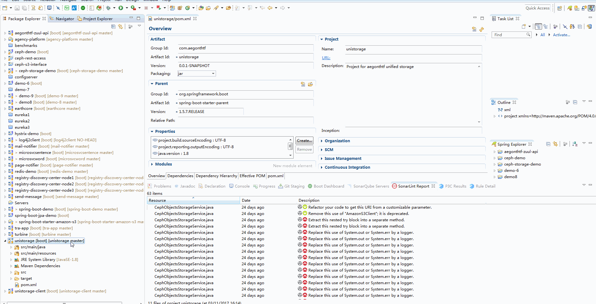

代码质量检查和分析指南
持续集成部署中包含代码质量检查一个环节，有工具协助进行代码规范和质量检查，应该是可以协助开发人员提高代码质量，增加生产效能，避免一些缺陷和安全风险的，是一件有益的事情。所以借由持续集成部署的逐步推出，也希望将代码质量检查工具推荐给大家使用。 故有这篇笔记。
涉及工具
- SonarQube代码质量扫描分析平台，eclipse插件
试用地址：
SonarQube URL: http://sonarqube-dev.aegonthtf.com User: admin Password: admin - 阿里Java代码规约插件（有兴趣可尝试）
使用场景
- 开发过程中检查分析代码质量，确保产出代码的质量
- 部署过程中分析检查代码质量，并增加检查标准和阀值，不符合质量要求的代码不允许部署到UAT环境和生产环境
- 调阅代码质量检查的数据，编写QA质量检查报告
开发过程中如何使用
-
在eclipse中使用Maven（调用sonarqube scannner)分析项目代码质量
SonarQube Scanner，是sonarqube是SonarQube的客户端,是代码扫描的工具，它会将项目的代码进行分析并与sonarqube Server一起完成代码分析，最后将结果发送至SonarQube服务器。
SonarQube Scanner很方便和不同类型的构建工具进行整合，我们使用Maven。
Maven仓库中有SonarQube Scanner工具的插件，只需要进行以下设置即可使用，需要在Maven的Setting.conf文件进行如下配置（我的配置，该配置指定了本地Maven仓库，并设置完毕sonarqube相关信息）
<?xml version="1.0" encoding="UTF-8"?> <settings xsi:schemaLocation="http://maven.apache.org/SETTINGS/1.1.0http://maven.apache.org/xsd/settings-1.1.0.xsd";; xmlns="http://maven.apache.org/SETTINGS/1.1.0";; xmlns:xsi="http://www.w3.org/2001/XMLSchema-instance">;; <pluginGroups> <pluginGroup>org.sonarsource.scanner.maven</pluginGroup> </pluginGroups> <profiles> <profile> <id>sonar</id> <activation> <activeByDefault>true</activeByDefault> </activation> <properties> <!-- Optional URL to server. Default value is http://localhost:9000 --> <sonar.host.url> http://sonarqube-dev.aegonthtf.com </sonar.host.url> </properties> </profile> <profile> <repositories> <repository> <snapshots> <enabled>false</enabled> </snapshots> <id>central</id> <name>libs-release</name> <url>http://artifactory.aegonthtf.com/artifactory/libs-release</url>;; </repository> <repository> <snapshots /> <id>snapshots</id> <name>libs-snapshot</name> <url>http://artifactory.aegonthtf.com/artifactory/libs-snapshot</url>;; </repository> </repositories> <pluginRepositories> <pluginRepository> <snapshots> <enabled>false</enabled> </snapshots> <id>central</id> <name>plugins-release</name> <url>http://artifactory.aegonthtf.com/artifactory/plugins-release</url>;; </pluginRepository> <pluginRepository> <snapshots /> <id>snapshots</id> <name>plugins-snapshot</name> <url>http://artifactory.aegonthtf.com/artifactory/plugins-snapshot</url>;; </pluginRepository> </pluginRepositories> <id>artifactory</id> </profile> </profiles> <activeProfiles> <activeProfile>artifactory</activeProfile> </activeProfiles> </settings>
配置完成后，在项目中，执行mvn sonar:sonar，SonarQube Scanner会完成扫描，并扫描结果会上传至Sonarqube服务器中，登陆服务器中就可以查看分析结果和进行后续处理了。
执行示例：
Demo项目： unistorage
开发工具： Eclipse
Build工具： Maven
演示示例： 通过开发工具中调用maven sonar:sonar完成代码分析，并在sonarqube服务端查看分析结果

演示示例： 通过持续集成部署流程完成代码分析. 特别点在代码质量检查的地方有两个步骤，一个是扫描分析，一个是评分。 评分低于标准，则流程终止，即无法完成部署。 这也是一个关键点，也许未来我们会用，那样不符合标准的程序就无法发到平台上去了。

-
SonarLint (eclipse plugin)组件的安装和使用
SonarLint可以在开发工具中实时对代码进行分析，并可以与sonarqube服务器联系。 试用过程发现sonarlint的分析结果并不会上传到sonarqube服务器中，但服务器中的策略等会影响sonarlint在本地的分析表现。
比如： 代码中存在一个已经被探知的bug,如果在服务器上标志已经修复，在下一次Sonarlint在分析时就会忽略这个bug.
演示示例： 通过sonarlint完成本地分析.服务端标注一个bug,本地下次扫描是会按服务器策略展示结果。

https://www.sonarlint.org/eclipse/
http://www.jianshu.com/p/778fd35fd494
-
使用Sonarqube Scanner CLI进行代码扫描(作者未测试这个部分)
https://docs.sonarqube.org/display/SCAN/Analyzing+with+SonarQube+Scanner
-
阿里Java开发规约插件

使用演示：

- 参考资料：